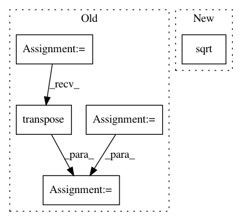

7abe05a7678c36077b53b5fa49f9588b90aac60f,test/likelihoods/test_general_multitask_gaussian_likelihood.py,TestMultiTaskGPRegression,test_multitask_low_rank_noise_covar,#TestMultiTaskGPRegression#,55
Before Change
model.eval()
likelihood.eval()
num_tasks = 2
task_noise_covar_factor = likelihood.task_noise_covar_factor
log_noise = likelihood.log_noise
task_noise_covar = task_noise_covar_factor.matmul(
task_noise_covar_factor.transpose(-1, -2)
) + log_noise.exp() * torch.eye(num_tasks)
self.assertGreater(task_noise_covar[0, 0, 1].item(), 0.05)
After Change
likelihood.eval()
task_corr = _eval_corr_matrix(likelihood.task_noise_corr_factor, likelihood.task_noise_corr_diag)
noise_diag = likelihood.noise_covar.log_noise.squeeze().diag().exp().sqrt()
task_noise_covar = noise_diag.matmul(task_corr).matmul(noise_diag)
self.assertGreater(task_noise_covar[0, 0, 1].item(), 0.05)
In pattern: SUPERPATTERN
Frequency: 3
Non-data size: 5
Instances
Project Name: cornellius-gp/gpytorch
Commit Name: 7abe05a7678c36077b53b5fa49f9588b90aac60f
Time: 2018-11-08
Author: balandat@fb.com
File Name: test/likelihoods/test_general_multitask_gaussian_likelihood.py
Class Name: TestMultiTaskGPRegression
Method Name: test_multitask_low_rank_noise_covar
Project Name: cornellius-gp/gpytorch
Commit Name: 85e8cf0742048b55a20418441e4e9e51444c3f54
Time: 2019-10-25
Author: balandat@fb.com
File Name: gpytorch/likelihoods/multitask_gaussian_likelihood.py
Class Name: _MultitaskGaussianLikelihoodBase
Method Name: _eval_corr_matrix
Project Name: geomstats/geomstats
Commit Name: 2dfa1664abf933b6188f325b127e9687d057d5da
Time: 2018-12-12
Author: ninamio78@gmail.com
File Name: tests/test_euclidean_space.py
Class Name: TestEuclideanSpaceMethods
Method Name: test_dist_vectorization